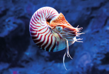
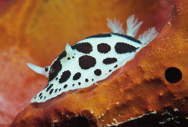
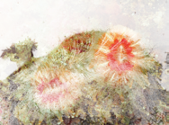

Los pólipos y las esponjas son animales sedenarios que dependen de la llegada del alimento del medio que los rodea. ¿Qué estrategias diferentes utilizan para conseguirlo?
Plantea una hipótesis que explique la finalidad que tiene en la lombriz de tierra mantener la piel húmeda en todo momento.
¿Cómo distinguirías una lombriz de tierra macho de una hembra?
Aristóteles (384 a. C.-322 a. C.) consideraba a las lombrices de tierra como los intestinos del suelo.
¿Por qué creéis que pensaba eso? Busca información sobre ello.
¿Qué es la lombricultura? ¿Encontráis alguna relación con la afirmación de Aristóteles? Razonad vuestra respuesta.
Investiga y elabora un informe sobre el reciclaje orgánico y su relación con las lombrices de tierra.
Explicad en una presentación qué es el humus de lombriz y cómo se hace.
Además del abono orgánico, también existen abonos químicos. Busca información sobre ellos y debatid en clase cuál pensáis que ayuda más al desarrollo sostenible de nuestro planeta.
Si las lombrices son beneficiosas para el suelo y las plantas, ¿lo serán también para los animales? Explica tu respuesta.
Busca información sobre los pólipos y las esponjas. Cita las fuentes consultadas.
Indica dos diferencias que existan entre estas parejas de animales.
¿Qué grupo de invertebrados pertenece estos animales?
Imágenes de invertebrados

Nautilus en agua azul

Babosa de mar colorida

Anémonas de mar coloridas